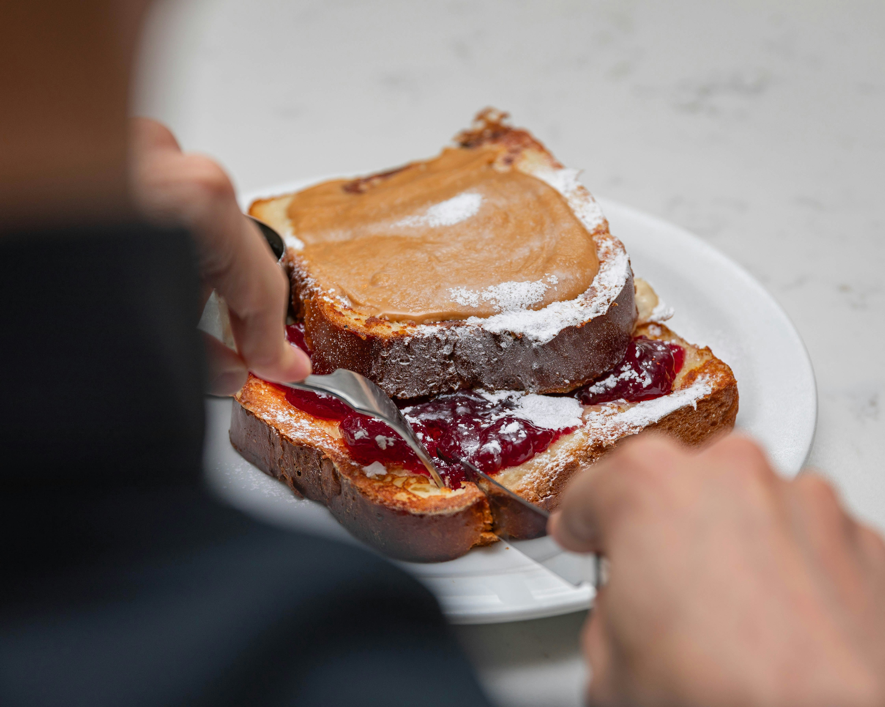

Home
Peanut Butter & Jelly Recipe

Description
The classic, the go-to, the absolutely easiest thing to assemble when you just want
something sweet and a little filling. The PB&J sandwich is a mainstay for a reason,
and holds a special place in most of our childhoods. Today I will break it down for
you so you can read how to make one if you ever forget.
Ingredients
- Two slices of bread (preferably something like white or whole grain)
- Jar of peanut butter
- Jar of jelly, jam, or preserves
Steps
- Prepare your workspace & ingredients.
- Pull out two slices of bread
- On one slice of bread spread a layer of peanut butter
- On the other slice of bread spread a layer of jelly
- Align the two slices and put them together, ingredients sides in
- Cut diagonally or vertically depending on preference
- CONSUME